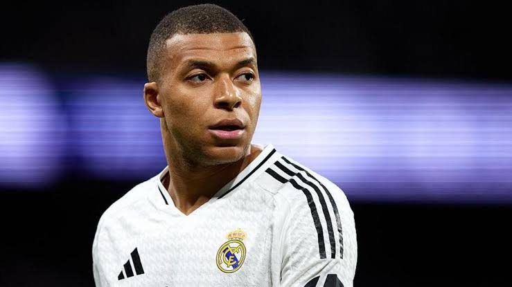

Kylian Mbappé
Datos interesantes
Kylian Mbappé nació en Bondy, un suburbio de París, y desde pequeño fue considerado un prodigio. Su ídolo de la infancia fue Cristiano Ronaldo, y de hecho decoraba su cuarto con posters del portugués. Fue campeón del mundo con 19 años, marcando en la final de Rusia 2018 y convirtiéndose en el segundo adolescente en lograrlo después de Pelé. Además, fue Bota de Oro del Mundial 2022 con 8 goles, incluido un hat-trick en la final. Domina varios idiomas, y su inteligencia dentro y fuera del campo lo ha hecho embajador de causas sociales y culturales. Su fichaje por el Real Madrid en 2024 fue uno de los más esperados en la historia del fútbol.
Características
- Velocidad explosiva
- Definición letal
- Desmarques inteligentes
- Regate en espacios cortos
Logros
- Mundial (Francia): 1
- Liga francesa (PSG): 6
- Copa de Francia: 4
- Supercopa de Francia: 4
- Subcampeón del mundo 2022